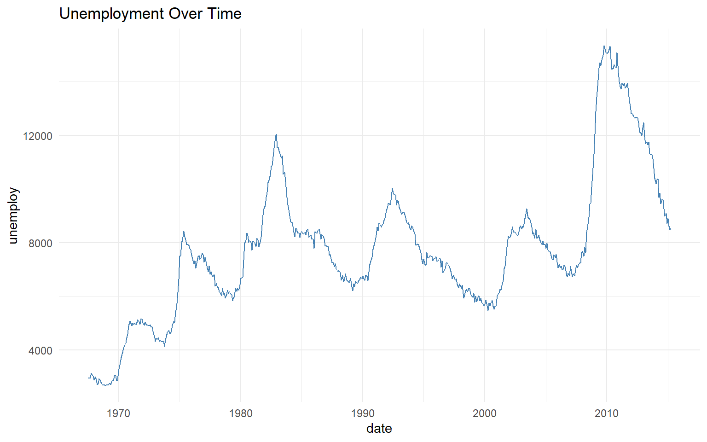

Data Visualization Portfolio
Homepage
Complex Graphics
Animation
Dashboard
Data Insights Dashboard
Data visualisation
RP Wadhwa
KPIs
Multiple visuals
University Map
Articles per day
10
Comments per day
52
Spam per day
12
Interactive Exploration: Horsepower vs MPG
Expand
Economic Trends: Unemployment

Expand
Efficiency Distribution
Expand
Campus Location
Expand